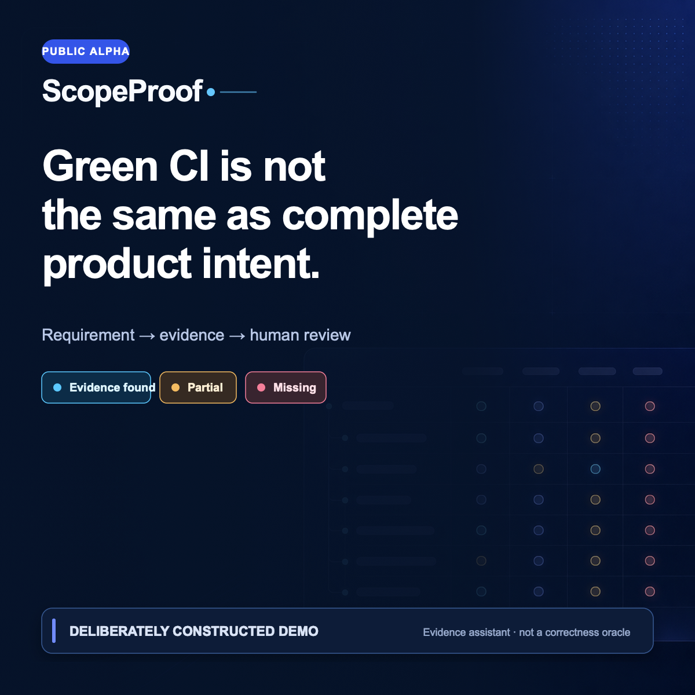

PR
Load a public GitHub pull request without executing its code.
Local-first · deterministic · public PRs only
ScopeProof shows which confirmed acceptance criteria have credible implementation or test candidates—and which still need human review.
Evidence assistant, not a correctness oracle. ScopeProof does not execute pull-request code, replace QA, or turn static evidence into runtime verification.

A bounded review
Load a public GitHub pull request without executing its code.
The source owner confirms one atomic requirement per line before analysis.
Deterministic rules cite immutable candidates or state what evidence is missing.
A human accepts, rejects, verifies, or records an exception with a reason.
Save or export a reproducible review without turning candidates into correctness claims.
60-second product walkthrough
This is a deliberately constructed demo case. ScopeProof uses deterministic evidence rules and human review; it does not guarantee correctness or replace QA.
Optional free design-partner review
ScopeProof is an acceptance-coverage assistant, not an AI code reviewer or correctness oracle. This optional free design-partner review is public-repository-only. No paid product or billing is active, and a pricing question is optional research after product use.
Product managers, QA practitioners, and engineers must own or be directly authorized to confirm the public acceptance criteria. Completed-review outcomes are a useful previously unknown gap, already-known information, or material product friction. Incomplete reviews do not become completed feedback outcomes.
Likes, views, stars, impressions, and downloads are not product validation. Owner activity and submissions without completed participant-selected outcomes also do not count.
The case form is the only inbound intake. Use the feedback form only after a genuine review. Submit no private code, credentials, customer data, private links, or confidential information.